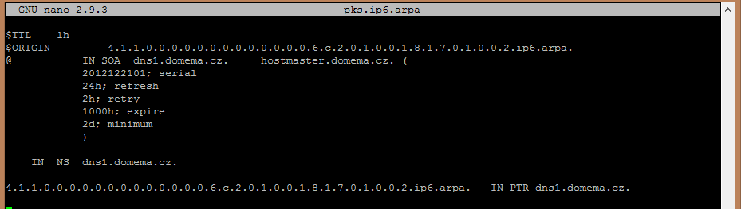

|
DNS
|
|
DNS - Domain name system
DNS (Domain Name System) je hierarchický systém doménových jmen, který je realizován servery DNS a protokolem stejného jména, kterým si vyměňují informace. Jeho hlavním úkolem a příčinou vzniku jsou vzájemné převody doménových jmen a IP adres uzlů sítě. Později ale přibral další funkce (např. pro elektronickou poštu či IP telefonii). Protokol používá porty TCP/53 i UDP/53. Servery DNS jsou organizovány hierarchicky, stejně jako jsou hierarchicky tvořeny názvy domén. Jména domén umožňují lepší orientaci lidem, adresy pro stroje jsou však vyjádřeny pomocí adres 32bitových (IPv4) A záznam nebo 128bitových (IPv6) - AAAA záznam. Systém DNS umožňuje efektivně udržovat decentralizované databáze doménových jmen a jejich překlad na IP adresy. Stejně tak zajišťuje zpětný překlad IP adresy na doménové jméno - PTR záznam.. Jak DNS fungujeProstor doménových jmen tvoří strom s jedním kořenem. Každý uzel tohoto stromu obsahuje informace o části jména (doméně), které je mu přiděleno a odkazy na své podřízené domény. Kořenem stromu je tzv. kořenová doména, která se zapisuje jako samotná tečka. Pod ní se v hierarchii nacházejí tzv. domény nejvyšší úrovně (Top-Level Domain, TLD). Ty jsou buď tematické (com pro komerci, edu pro vzdělávací instituce atd.) nebo státní (cz pro Česko, sk pro Slovensko, jo pro Jordánsko atd.). Strom lze administrativně rozdělit do zón, které spravují jednotliví správci (organizace nebo i soukromé osoby), přičemž taková zóna obsahuje autoritativní informace o spravovaných doménách. Tyto informace jsou poskytovány autoritativním DNS serverem. Výhoda tohoto uspořádání spočívá v možnosti zónu rozdělit a správu její části svěřit někomu dalšímu. Nově vzniklá zóna se tak stane autoritativní pro přidělený jmenný prostor. Právě možnost delegování pravomocí a distribuovaná správa tvoří klíčové vlastnosti DNS a jsou velmi podstatné pro jeho úspěch. Ve vyšších patrech doménové hierarchie platí, že zóna typicky obsahuje jednu doménu. Koncové zóny přidělené organizacím připojeným k Internetu pak někdy obsahují několik domén – například doména kdesi.cz a její poddomény vyroba.kdesi.cz, marketing.kdesi.cz a obchod.kdesi.cz mohou být obsaženy v jedné zóně a obhospodařovány stejným serverem. DNS servery (name servery)DNS server může hrát vůči doméně (přesněji zóně, ale ve většině případů jsou tyto pojmy zaměnitelné) jednu ze tří rolí:
Odpověď pocházející přímo od primárního či sekundárního serveru je autoritativní, čili je brána za správnou. Z hlediska věrohodnosti odpovědí není mezi primárním a sekundárním serverem rozdíl, oba jsou autoritativní. Naproti tomu odpověď poskytnutá z vyrovnávací paměti není autoritativní. Klient může požádat o autoritativní odpověď, v běžných případech ale stačí jakákoli. Postup při řešení DNS dotazu
Typy záznamůZáznam ATento záznam se používá, pokud pracujeme s nastavením webových stránek. Je to ten nejobyčejnější typ záznamů, slouží jen k zamaskování IP adresy za hezkou doménu, dají se zde tvořit subdomény. Záznam AAAAJe to záznam vlastnostmi skoro totožný s obyčejným záznamem A. Je zde pouze drobná úprava kvůli novému systému IP adres, konkrétně IVv6. Tyto IP řeší problém s nedostatkem tehdejších, ale zatím využívaných IPv4. Záznam CNAMEJe to způsob jak již v DNS nastavit nasměrování na jinou doménu, či subdoménu. Může se jednat jak o doménu, která je totožná s tou ze které směrujete, ale bude mít jen jinou předponu, ale může to být i jiná doména s úplně jinou subdoménou. Z http://nasedomena.cz/ směrujeme na http://sub.nasedomena.cz/ Z http://nasedomena.cz/ směrujeme na http://jinadomena.cz/ Záznam MXTento typ záznamu využijeme, když budeme chtít nastavit v DNS emailový server. Pro obsluhu tohoto záznamu budu předpokládat, že máte vytvořený a funkční záznam A. Co se záznamem vlastně můžeme docílit? Můžeme nastavit, kam se bude směrovat pošta. Výhodou tohoto záznamu je to, že můžeme udělat více serverů a hlavně můžeme udělat i subdoménové maily. Více serverů se využije, pokud budete mít nějaký primární a pak rezervní server. Subdoménové emaily se využijí, například když máte ve firmě několik oddělení a každé má svou subdoménu, budete potřebovat pro ně maily. Ovšem Josef Novák bude ve firmě dvakrát, jednou na prvním a jednou na druhém oddělení. Budeme mít maily novak@1.domena.cz a novak@2.domena.cz. Účty budou rozdílné a rovnou se odesílateli mailu řekne, kde daný pracuje a usnadní to komunikaci. Záznam TXTTXT záznam (text record) je další možný typ, ovšem není moc potřebný pro základní nastavení. Active24 radí jeho používání jen těm zdatnějším uživatelům. Slouží k uchování textového řetězce v systému DNS. Text, který tento kód vyjadřuje, může být dlouhý maximálně 255 znaků. Mezi tyto znaky patří písmena bez diakritiky, číslice, spaciální znaky (+, -, =, %, @, ?, !). Jak se tento záznam dá využít? Příkladem využití TXT záznamu je možnost definice, které servery smí odesílat emaily s adresou odesílatele v této doméně. Záznam NSNS záznam, neboli Name Server záznam nám určuje server/y, na kterých jsou spravovány DNS údaje domény. Název DNS serveru/ů sdělují poskytovatelé webhostingových služeb. Konfigurace1. Instalace Bind9
sudo -i
2. Otevřít soubor named.conf.local a upravitnano /etc/bind/named.conf.local Přepsat na:
zone "domena.cz" { 3. Vytvoření primární zóny
mkdir zones Napsat: 4. Vytvoření reverzní zóny6. RestartNyní restartujeme bind a můžeme vše otestovat /etc/init.d/bind9 restart |
|
Vytvořeno v rámci předmětu Praktikum komunikačních sítí I, Letní semestr 2018/2019
|